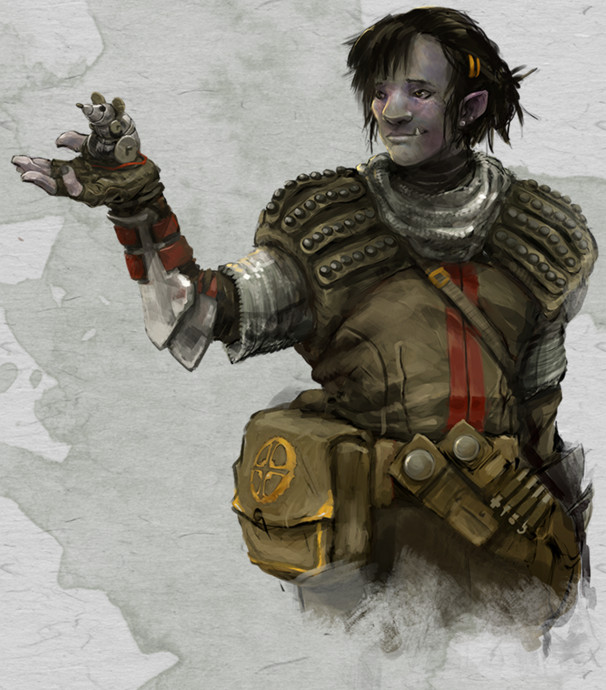

Clerc demi-orc niv 1

Armine
Clerc (savoir) 1 (0 PX)
Demi-orc (f), neutre bon
Artisan de guilde (ingénieur)
[ CARACTÉRISTIQUES ]
For 10 (+0) Dex 10 (+0) Con 14 (+2)
Int 14 (+2) Sag 15 (+2) Cha 12 (+1)
[ MAÎTRISES ]
Bonus de maîtrise +2
Sauvegardes Sag +4, Cha +3
Compétences Histoire +4, Intimidation +3, Médecine +4, Nature +4, Perspicacité +4, Persuasion +3, Religion +4 (Perception passive 12)
Armes armes courantes
Armures armures légères et intermédiaires, boucliers
Outils outils de forgeron
Langues commun, gnome, halfelin, nain, orc
[ COMBAT ]
pv 10 ; DV 1d8
Init +0 ; Vitesse 9 m
CA 14 (armure de cuir clouté 12, bouclier +2, Dex +0)
Marteau de guerre. Corps à corps : +2 (1d8 contondant ; polyvalente (1d10))
Marteau léger. Corps à corps : +2 (1d4 contondant ; légère, lancer (portée 6 m/18 m))
[ SORTS DE CLERC ]
Caractéristique d'incantation Sagesse ; DD de sauvegarde des sorts 12 ; Bonus d'attaque des sorts +4
Sorts à préparer chaque jour 3 ; Emplacements 2
Sorts à volonté connus 3
- Niv 0 : flamme sacrée, réparation, résistance
[ CAPACITÉS & TRAITS ]
Sorts de domaine (identification, injonction)
Bénédictions du savoir *
Vision dans le noir (18 m)
Menaçant *
Acharnement
Attaques sauvages
Membre de guilde (soutiens des compagnons de guilde)
[ ÉQUIPEMENT ]
Marteau de guerre, marteau léger, armure de cuir clouté, bouclier, outils de forgeron, outils de bijoutier, symbole sacré/emblème, sac à dos, sac de couchage, gamelle, boite d'allume-feu, torche (10), rations/1 jour (10), gourde, corde en chanvre de 15 m, vêtements de voyage, bourse, lettre de recommandation d'une guilde
Coût de l'équipement 149 po ; Poids de l'équipement 46.5 kg
15 po
Poids des pièces 0.15 kg
[ PERSONNAGE ]
Taille M / 1,85 m / 75 kg ; Âge 17 ans (âge apparent 22)
Yeux noirs ; Peau grise ; Cheveux noirs
Apparence du personnage Peau grise pâle et dents proéminentes, l'apparence d'Armine trahit ses origines orcs. Mais ses manières affables et enjouées font d'elle une personne sociable et appréciée.
Trait Je crois que si quelque chose doit être fait, il doit l'être correctement. Je n'y peux rien, je suis perfectionniste. Je veux tout le temps savoir comment les choses fonctionnent et ce qui pousse les gens à avancer.
Idéal Générosité. Mes talents m'ont été donnés pour que je les utilise pour le plus grand nombre.
Lien J'ai une énorme dette envers ma guilde, car elle a fait de moi ce que je suis aujourd'hui.
Défaut Je ferais n'importe quoi pour mettre la main sur quelque chose de rare ou d'inestimable.
Passé du personnage Née d'une demie-orc vivant en ville depuis un moment (ayant vécu une vie d'aventure, elle s'était liée d'amitié avec un humain devenu capitaine de milice, qui l'employa ensuite), Armine a toujours vécu dans une communauté citadine, entourée de personnes habituées à elle. Sa mère, morte alors qu'elle n'était qu'à peine préadolescente (8 ans), fit vendre son héritage (issu de ses années d'aventures et quelques économies) pour payer l'inscription à la guilde locale des forgerons gnomes et les frais qui suivraient. Ainsi dotée, Armine put faire son deuil en s'engouffrant dans le travail, les gnomes ne la ménageant pas. Elle put ainsi vivre presque une dizaine d'années excitantes et fatigantes, pleines de découvertes et de discussions, de surprises et de joies, grâce à ses amis de la guilde, compagnons, maîtres et apprentis, mais aussi grâce aux vétérans de la compagnie de sa mère vivant encore dans la ville et en premier lieu Rangrim Dugrantan, un nain des collines devenu ami (peut-être plus, il n'a jamais voulu le dire) avec sa mère, avec qui il affronta de terribles dangers. Rangrim fut tel un père, de façon spirituelle surtout, lui apprenant ses valeurs et partageant avec Armine les enseignements de son dieu Gond, qui résonnaient avec ceux des ingénieurs gnomes qui lui enseignaient leurs techniques. Armine s'impliqua autant auprès de la guilde que du clergé et devint ainsi la première compagnon-ingénieure de la guilde à être ordonnée clerc de Gond le même jour. Le jour de l'obtention de ces titres, Armine a annoncé à tous sa décision de voyager pour s'aguerrir comme sa mère, découvrir des techniques et des méthodes novatrices, approfondir sa quête spirituelle et accomplir son grand'oeuvre.
[ ÉVOLUTION ]
Les suggestions ci-après sont en lien avec le passé d'Armine.
Au niveau 2, ajoutez les capacités Canalisation d'énergie divine : renvoi des morts-vivants et Canalisation d'énergie divine : connaissance du passé (ses pv passent à 18 et ses DV à 2d8).
Au niveau 3, ajoutez les sorts image miroir et passage sans trace aux sorts de domaine (ses pv passent à 26 et ses DV à 3d8).
Stat et histoire de Thôt